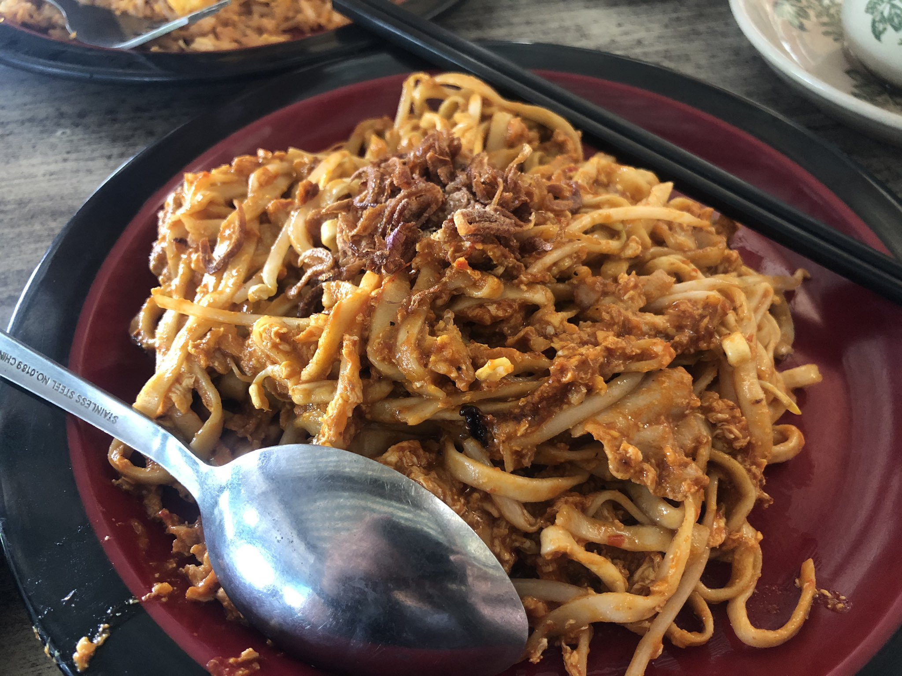
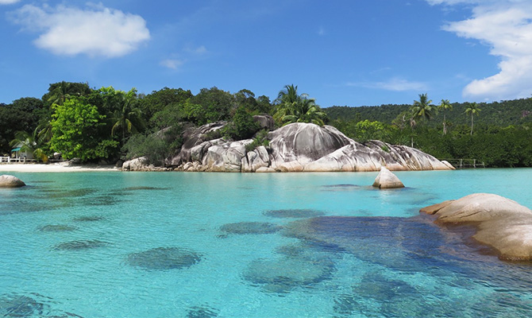

Sepertinya banyak dari teman-teman yang masih belum tahu nih kuliner yang satu ini, yaitu Mie
Tarempa!
Yuk kita simak penjelasan tentang Mie Tarempa!

Mie Tarempa
Wah, bisa dlilihat dari gambar diatas, terlihat lezat bukan? dengan bumbu warna yang merah dan
sangat
lezat sangat menggugah selera.
Tapi apasih Mie Tarempa itu? Mie Tarempa sendiri merupakan makanan khas daerah Tarempa loh!
Tarempa
sendiri terletak di Kabupaten Anambas, Kepulauan Riau.
Dari segi tampilan, Mie Tarempa mirip dengan Mie Aceh bukan? Tetapi, dari segi bahan masakan dan
rasanya
tentu berbeda! Nah, buat kalian masyarakat batam pasti tau sih Mie yang satu ini!Rasa dari Mie
Tarempa
sendiri itu manis dan asam. Dimana, rasa ini berasal dari bahannya yaitu cabe dan
ikan Tongkol. Mie Tarempa juga disajikan dengan macam variasi, ada yang basah, lembab, dan
kering. Untuk
variasi akan berpengaruh ke tekstur mie-nya sendiri.

Kepulauan Anambas
Pulau Tarempa
Bahan Masak
Apa aja sih bahan buat membuat Mie Tarempa? Yuk kita simak!
Mie Telur Gepeng 150 gram
Ikan Tongkol
Telur(yang sudah dikocok) 2 butir
Daun Bawang, iris tipis 1 batang
Seledri, iris halus 1 tangkai
Bawang Putih yang sudah dihaluskan 2 siung
Cabe merah 3 buah
Cabe rawit 2 buah
Saus Tomat 2 sdm
Saus tiram 2 sdm
Kecap Manis 1 sdm
Air kaldu 500 ml
Minyak Goreng
untuk bahan masakannya mudah untuk dicari bukan? Nah untuk cara membuatnya mari simak cara berikut!
Cara Membuat
Nah, karena tadi kita sudah mempersiapkan bahan masakannya, mari kita buat!
Kukus ikan tongkol hingga matang, kemudian halus dengan kasar menggunakan blender atau chopper.
Rebus Mie (setengah mateng aja ya!)
Haluskan cabai merah dan cabai rawit, kemudian tumis hingga harum bersama bawang putih. Sisihkan
bumbu di tepi wajan kemudian masukkan telur kocok, orak arik hingga telur matang.
Masukkan tongkol dan mie yang sudah direbus, aduk rata. Tambahkan air kaldu atau air biasa.
Masukkan saus tiram, saus tomat, kecap manis dan kecap asin, aduk rata. Tambahkan tauge, daun
bawang
dan seledri, aduk rata. Masak sampai mie matang, koreksi rasanya. Jika kurang asin, tambahkan
garam.
Tata dalam piring saji, taburi dengan bawang goreng dan irisan seledri.